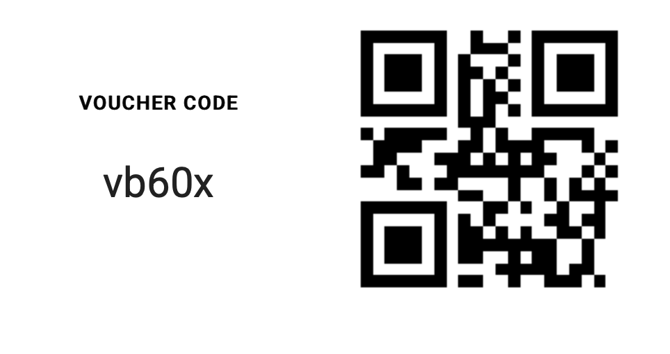

About the Study
Hi! Thank you for participating in this study! Your contribution is valuable in helping us understand food purchasing behaviours. To ensure a smooth experience, please read the following instructions carefully.
How to Get Started:
1. Download the TIIM App
- You can download TIIM from Google Play or the App Store (see below)
- Check that your device is compatible:
- iOS: Version 17.5 or later
- Android: Version 14 or later
2. Create an Account
- Open the app and press "Register."
- Provide your name, email address, and a secure password.
- After a few days of inactivity, TIIM will log you out, so we recommend saving your password in a password manager.
- You can choose TIIM to remember your password and use biometric data like FaceID or fingerprint to log you back in.
3. Sign up for the study
Use the code vb60x or the QR code below
4. Enable Notifications
- To ensure you receive timely reminders, turn on push notifications for TIIM in your device settings and within the app.
5. Using the App
- You will receive notifications three times a day prompting you to complete a short questionnaire.
- If you have purchased food, please take a picture and attach it to your next questionnaire response. This method is advisable and strongly recommended.
- If you forget to take a picture, you may describe your purchase in detail instead.
- When filling in the questionnaire, please ensure that you capture everything you have purchased within a single photo, as you can only upload one image per entry.
Important Notes:
- Food purchases may not always coincide with the times you receive a questionnaire notification. However, it is important that you still take a picture at the time of purchase and upload it when you next respond in the app.
- Upload photos of your food purchase as soon as you receive the next notification. Please do not wait until the last moment to submit everything at once.
- Ensure the app is updated to avoid technical issues.
